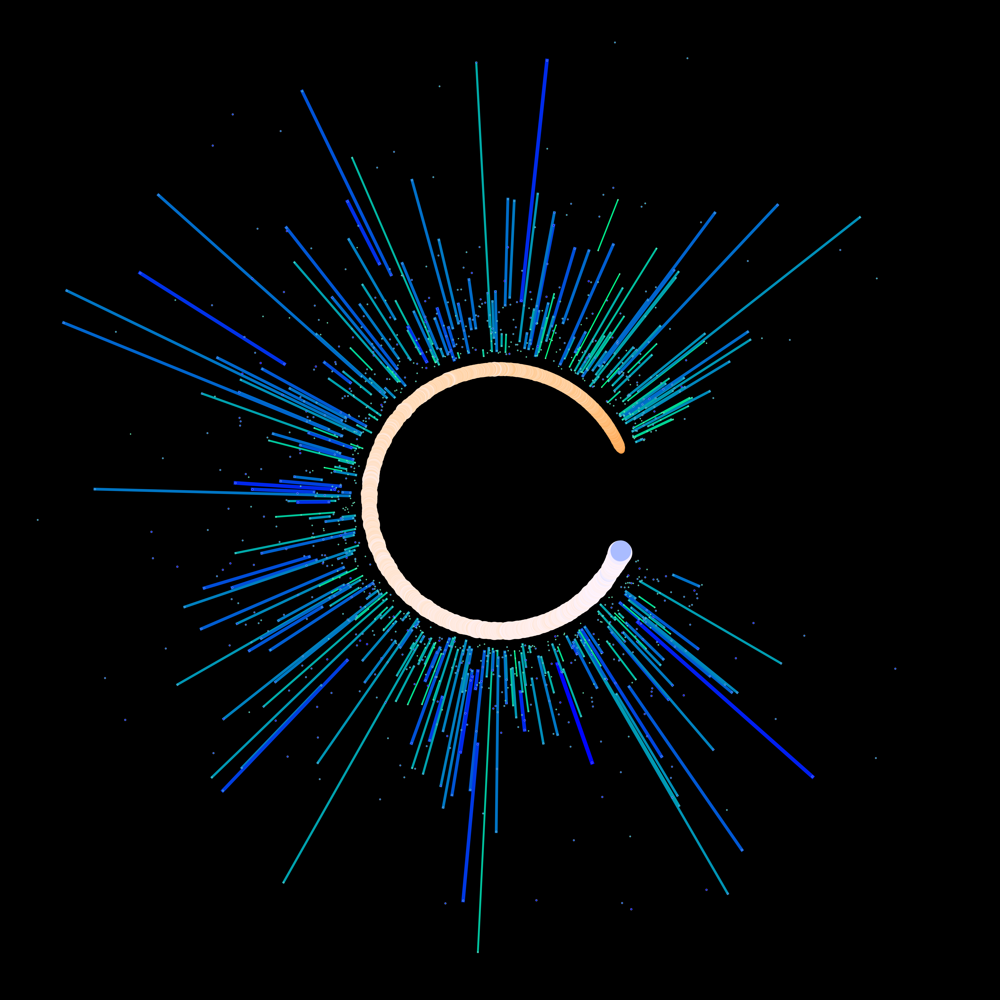
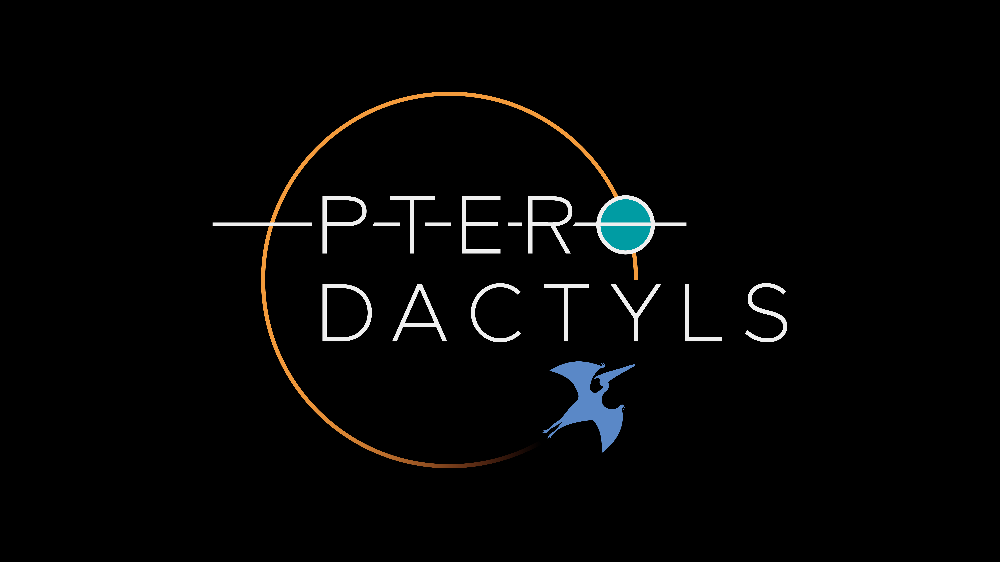
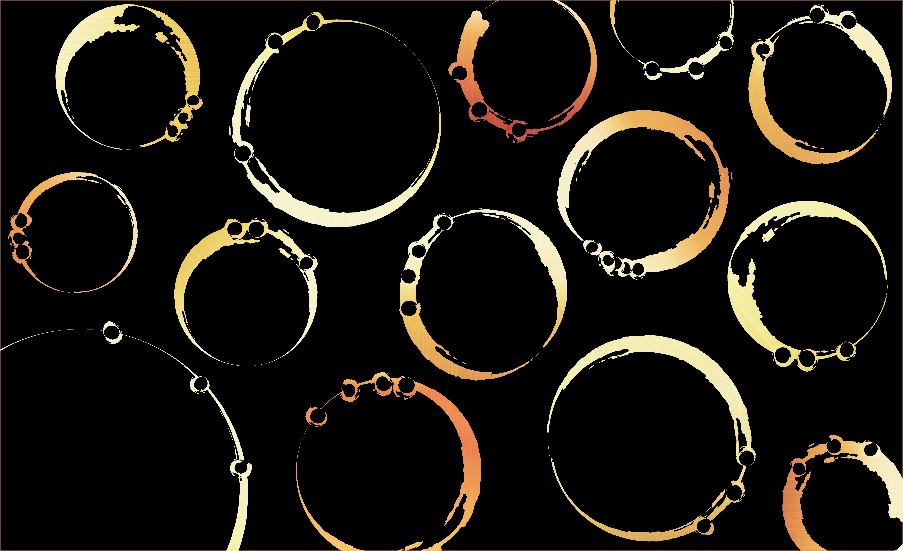
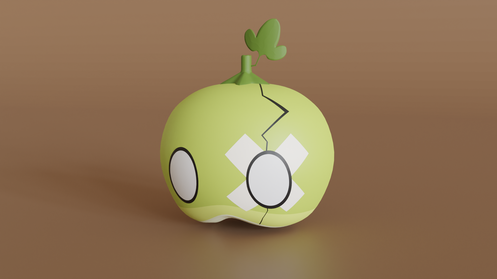
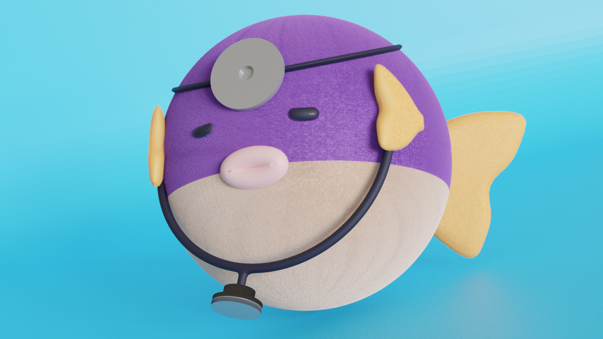
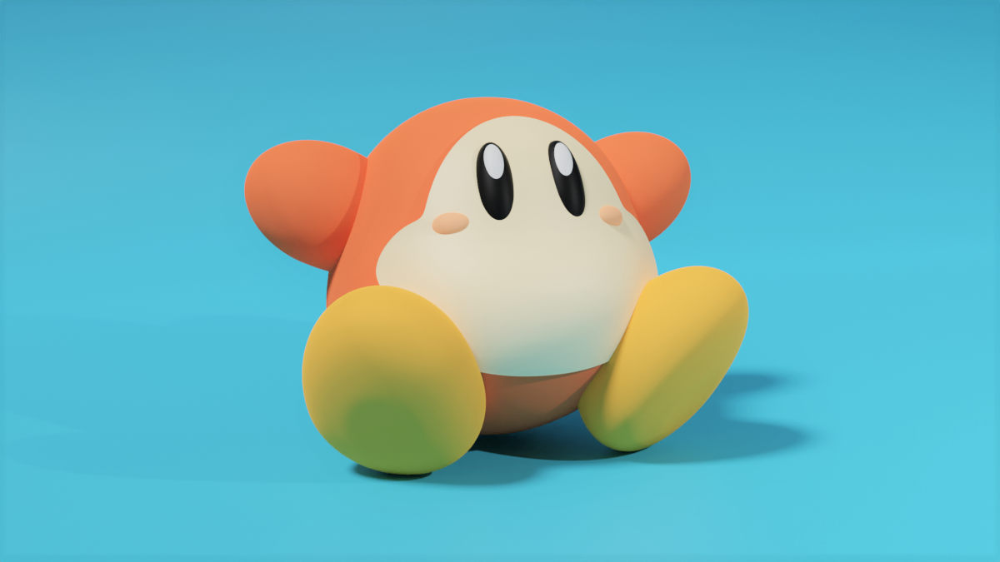

Art
I make art some times! I've made a few pieces of art from Kepler data, and typically submit them to our department's artshow, The Art of Planetary Science. My pandemic hobby was learning the 3D modeling software Blender and streaming my workflow on Twitch. I've made a few fan arts over the years, mostly little models of caracters and items from (or inspired by) the series I enjoy.



Fan Art






Games
Video games have always been a huge part of my life, from playing with friends to competing in and casting at local tournaments. I've got a love for indies and a predilection for puzzle games, and have spent more than my fair share of time aiming for 100% trophies.

Playing Games with My Feet
I have a mechanical disability which makes it difficult to play video games with my hands, so I've been playing games with my feet since 2021. I use a set of Logitech Accessibility Kit buttons, switches and triggers, all conntcted to an Xbox Adaptive Controller. This is wired into a Magic NS adapter, which is also wirelessly synced to a Nintendo Switch Pro Controller to provide use of thumbsticks; wired joysticks could also plug directly into the XAC. This set-up works for Switch and PC games (and probably Xbox, which I don't have), and I use an additional ADAPEX R90 adapter to play games on PS5 (only works for PS4 games at the moment).
My buttons are normally velcro-mounted to some panels on a floor mat, but they can detach and reattach to any velcro surface. For certain games, I'll attach them to various sections of my chair or couch to incorporate my legs, elbows, or neck. My current set-up took around a year of trial and error, so I've tried various configurations, controllers and adapters. I'm always happy to discuss or field questions on custom controllers, accessibility featurres and gaming with disabilities.
Anime and Manga
Nowadays I read a lot of manga, but I got my start by watching a lot of anime. You can find some mostly-complete lists of things I've watched/read at the links below.
The One Piece Metric
How long does it take a manga to say "one piece" in any way, shape or form? This can be referencing the titular treasure, or in more common phrases like "let me give you one piece of advice" or "you won't make it out in one piece." I keep track of this very useful and totally not pointless statistic, dubbed "The One Piece Metric."
Below is a plot showing the fraction of manga series that have said "one piece" by the time they reach a particular chapter, based on the instances and series I've recorded so far. You can find all my recorded entries at this spreadsheet.
Disclaimer: based on my readings of official English translations. I might have missed some earlier instances, especially in series I was reading before I started (e.g., My Hero Academia). If you find an earlier instance in a series I've read, let me know!